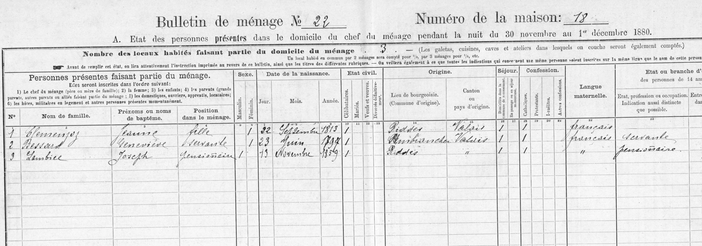
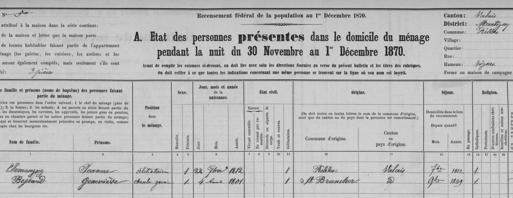
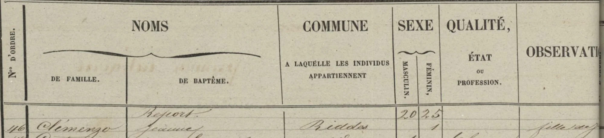
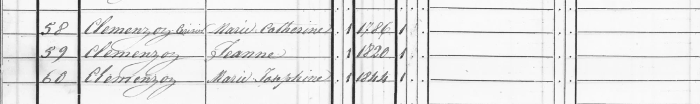

La historia
Jeanne Marie Clemenzo nació el 22 de septiembre de 1813 en [[riddes-valais|Riddes]] (el recensement de 1870 declara 1812; el de 1880 y los censos de 1829 y 1837 dicen 1813). Hija de Jean Joseph Clemenzo y Marie Catherine Cerisier, hermana de François Clemenzoz. Los censos la muestran toda la vida en el mismo lugar: primero en el hogar paterno —que vivía en Riddes con burguesía de [[ardon-valais|Ardon]]—, en 1850 acompañando a su madre ya viuda, y desde al menos 1870 como jefa de su propio hogar, soltera, en el caserío de Vignes — el mismo topónimo de las tierras familiares que se subastaron en la ruina de su hermano, y a pasos de Plan de Villy, donde vivía el hogar Lambiel.
No vivía sola: en 1870 y 1880 la acompaña Geneviève Bessard, una soltera de Sembrancher que pasó de chambre garnie (inquilina, en la casa desde 1849) a servante. Y en 1880 aparece el dato más sugestivo:
Mientras sus sobrinos François Clemenzo y Etienne Clemenzo emigraban a Argentina, Jeanne se quedó como el último ancla de la familia en Riddes. En enero de 1905 los bienes de la familia en Riddes se liquidaron (1.030 francos) y el dinero se giró vía [[sion-valais|Sion]] y el Consulado suizo a los dos sobrinos emigrados — la lectura más simple es que esa liquidación fue su sucesión: Jeanne habría muerto poco antes, hacia 1904.
Cronología
| Año | Fuente | Qué dice |
|---|---|---|
| 1813 (22 sep) | recensements 1870 y 1880 | Nace en Riddes; día y mes en ambos censos federales (1870 declara año 1812, 1880 y los censos de 1829/1837 dicen 1813) |
| 1829 | Censo de Riddes, 2.ª clase | En el hogar paterno, «porté à Ardon 1re classe» |
| s/f (¿1829?) | Censo de Ardon | «Janne Marie», 1813, en el hogar encabezado por su madre |
| 1837 | Censo de Riddes, 1.ª clase | «Jeanne Marie», fille, en el hogar de Jean Joseph y Catherine |
| 1846 | Censo de Riddes | «Clémenzo, Jeanne», comuna Riddes |
| 1850 | Censo de Riddes | Con su madre viuda («Jeanne», n. 1820 sic) y «Marie Josephine» (n. 1844, ¿Josephine Clemenzo?) |
| 1870 (1 dic) | Recensement fédéral, Riddes, caserío Vignes | Jefa de hogar, célibataire, n. 22-09-1812; vivienda de 3 piezas; con Geneviève Bessard (Sembrancher, n. 1801) en chambre garnie desde 1849 |
| 1880 (1 dic) | Bulletin de ménage n.º 22, casa 18, Riddes | Célibataire, n. 22-09-1813, burguesía de Riddes, francés; con Geneviève Bessard (servante) y Joseph Lambiel (n. 13-11-1859), pensionnaire |
| 1905 (ene) | giro vía Caisse d'Épargne, Sion | Se liquidan los bienes de la familia en Riddes (1.030 frs) y se giran a François Clemenzo y Etienne Clemenzo en Argentina — hipótesis: su sucesión |
Qué falta / hipótesis
La discrepancia 1812/1813 entre censos es menor (autodeclaración); el día 22 de septiembre coincide en ambos federales.
Líneas de investigación
- Buscar el acta de defunción de Jeanne en Riddes, ~1900–1905 (registro civil, desde 1876 federal)
- Identificar a Joseph Lambiel (n. 13-11-1859, Riddes): ¿hijo de Jean Lambiel y «Elisabeth née Clementz»? — cruzar con el censo de 1870 del hogar Lambiel
- Preguntar a Jean-Yves si su rama registra a esta Jeanne y con quién emparienta a los Lambiel
- Buscar el expediente de la liquidación de 1905 (¿sucesión de Jeanne?) en minutas notariales del AEV o archivos comunales de Riddes
Fuentes
- Censo de Riddes 1829, 2.ª clase (François Clemenzoz-Jean Joseph Clemenzo-Marie Catherine Cerisier-Joseph Florentine Clemenzo-Joseph Marie Clemenzo-p74-Marie Henriette Clemenzo-Marie Elizabet Clemenzo-1829-riddes-2clase.webp)
- Censo de Ardon, s/f (censo-1.webp, censo-2.webp)
- Censo de Riddes 1837, 1.ª clase (François Clemenzoz-Jean Joseph Clemenzo-Marie Catherine Cerisier-p74-Marie Henriette Clemenzo-Marie Elizabet Clemenzo-1837-riddes-censo.webp)
- Censo de Riddes 1846 (p74-1846-riddes.webp)
- Censo de Riddes 1850 (Marie Catherine Cerisier-p74-1850-riddes.webp)
- Recensement fédéral 1870, Riddes, hameau Vignes (p74-1870-riddes-censo.webp)
- Bulletin de ménage n.º 22, recensement 1880, Riddes (p74-1880-riddes-censo.webp)
- Giro de 1905 vía Caisse d'Épargne du Canton du Valais — ver [[sion-valais]] y la ficha de François Clemenzo
Documentos


Censos




